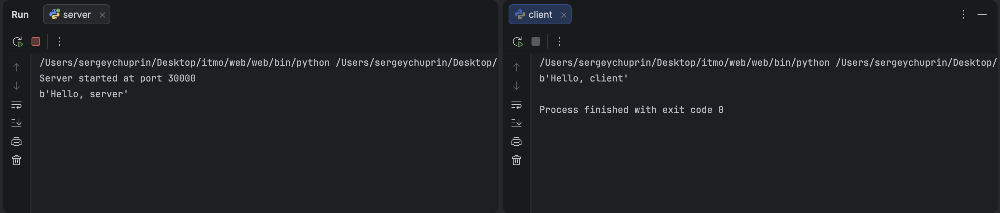

Задание 1 - Обмен сообщениями по UDP¶
Задача¶
Реализовать клиентскую и серверную часть приложения. Клиент отправляет серверу сообщение «Hello, server», и оно должно отобразиться на стороне сервера. В ответ сервер отправляет клиенту сообщение «Hello, client», которое должно отобразиться у клиента.
Требования:
- обязательно использовать библиотеку
socket; - реализовать с помощью протокола UDP.
Теория¶
UDP — протокол без установления соединения: отправитель просто посылает датаграмму,
не дожидаясь подтверждения от получателя. Это быстрее TCP, но не гарантирует ни доставку,
ни порядок пакетов. Для простого обмена сообщениями этого достаточно. Поэтому сервер
не вызывает listen()/accept(), а сразу читает датаграммы методом recvfrom(),
который возвращает данные и адрес отправителя. По этому адресу сервер отвечает
методом sendto().
Сокет создаётся с параметрами socket.AF_INET (IPv4) и socket.SOCK_DGRAM (UDP).
Код сервера¶
import socket
server = socket.socket(socket.AF_INET, socket.SOCK_DGRAM)
server.bind(('localhost', 30000))
print('Server started at port 30000')
while True:
data, address = server.recvfrom(1024)
print(data)
server.sendto(b'Hello, client', address)
Код клиента¶
import socket
client = socket.socket(socket.AF_INET, socket.SOCK_DGRAM)
client.sendto(b'Hello, server', ('localhost', 30000))
answer, _ = client.recvfrom(1024)
print(answer)
Запуск¶
Из папки task1 в двух разных терминалах:
python3 server.py
python3 client.py
Пример¶
